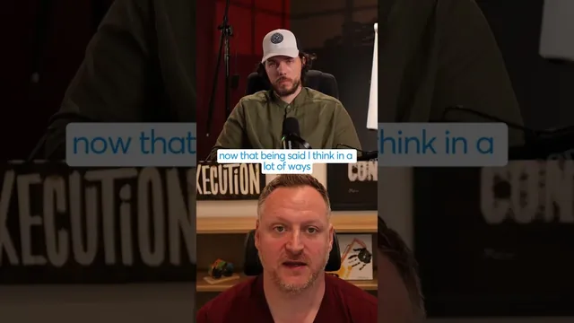

이제 웹사이트로는 못 먹고삽니다

원본 영상 보기 →
- 던닝-크루거 효과가 서비스업의 방패가 된다
- AI 도입 속도는 지역·집단마다 완전히 다르다
- 가격은 살아남아도 마진은 무너진다
한 줄 요약
서비스형 비즈니스는 앞으로 10년도 살아남겠지만, 그 안에서 가격은 계속 무너진다 — 실제로 풀스택 웹사이트 제작 비용이 30~40만 달러에서 3만 달러로 떨어졌다는 이야기와 함께, "그래도 사람이 필요한 이유"를 설명한다.
전체 내용 정리
서비스형 비즈니스가 살아남는 이유는 사람들이 일하기 싫어하기 때문이다
질문자는 최근 LLM이 온라인으로 다른 비즈니스를 도와주는 서비스직 일자리를 대거 없애고 있다며, 서비스 기반 온라인 커리어가 앞으로도 유효할지 물었다. 답변자는 "우리는 1년 안에 할 수 있는 일은 과대평가하고, 10년 안에 할 수 있는 일은 과소평가한다"는 말을 인용하며(본인 표현으로는 거꾸로 인용했다고 덧붙였다), 서비스형 비즈니스가 지금도, 그리고 10년 뒤에도 존재할 것이라고 본다. 이유는 간단하다. 월 20~30달러짜리 ChatGPT나 Claude 구독을 쓰고 유튜브에서 스킬을 잔뜩 내려받아 어떻게든 해결책을 만들어낼 수 있다 해도, 대부분의 사람은 그 일을 직접 하고 싶어 하지 않는다는 것이다.
사람들은 LLM으로 뭐든 할 수 있다고 착각했다가 금방 한계를 깨닫는다
답변자는 여기서 던닝-크루거 효과(Dunning-Kruger effect)를 언급한다. 사람들이 LLM으로 할 수 있는 일을 과신했다가, 실제로는 자신이 뭘 하고 있는지 모른다는 걸 아주 빨리 깨닫게 된다는 것이다. 그래서 많은 경우 여전히 숙련된 실무자가 대신 해주길 원하게 된다. 다만 그는 서비스형 비즈니스, 특히 에이전시들이 LLM이나 트랜스포머 모델이 등장하기 훨씬 전인 지난 10년간 이미 서서히 죽어가고 있었다는 점도 함께 짚었다. 경제학자들이 예측하는 "긱(gig) 경제" 형태로 가고 있고, 중간층이 무너지는 흐름을 보게 될 것이라고 본다. 실리콘밸리가 예전에 "10x 엔지니어"를 이야기했던 것처럼, 이제는 "10x 직원"이 등장하는 조짐이 보인다고 했다. 다만 아직 그 단계에 완전히 도달한 것은 아니라고 선을 그었다.
지역별 AI 도입 격차가 여전히 서비스업의 시장을 떠받치고 있다
답변자는 "모든 일자리가 이렇게 된다" 혹은 "어떤 일자리도 사라지지 않는다"는 식의 과장된 이야기는 사실이 아니라고 강조한다. 미래를 예측하는 가장 강력한 근거는 과거라는 것이다. 그는 자신이 사는 미국 동부에서는 자신이 소유한 테크 캠퍼스를 걸어 다니면 다들 Claude나 OpenAI를 쓰고 있지만, 몇 달 전 미국 중서부에 갔을 때는 ChatGPT를 한 번도 써본 적 없는 사람을 만났다고 말한다. 즉 인구의 상당 부분은 아직 AI 도구에 익숙하지 않으며, 이런 회사들은 여전히 사람이 직접 찾아가 손을 잡고(handhold) 서비스를 해주길 원할 것이라고 본다. 하지만 동시에 상당히 큰 붕괴도 함께 올 것이라고 예상한다. 본인의 사례로, 예전에는 풀스택 웹사이트 제작에 30만~40만 달러를 청구했지만, 지금은 고객들이 "우리가 Claude나 Lovable 같은 툴로 직접 하겠다"며 가격을 흔들려고 하고, 그 결과 프로젝트 비용이 30만~40만 달러에서 3만 달러 수준으로 급격히 압축됐다고 밝혔다. 그는 이런 마진 침식(margin erosion)이 앞으로도 계속될 것으로 본다.
핵심 인사이트
- 던닝-크루거 효과가 서비스업의 방패가 된다: 고객이 LLM으로 뭐든 직접 할 수 있다고 믿었다가 금방 한계를 깨닫는 경우가 많아서, 숙련된 실무자에 대한 수요 자체는 쉽게 사라지지 않는다.
- AI 도입 속도는 지역·집단마다 완전히 다르다: 테크 허브에서는 모두가 Claude를 쓰지만, 다른 지역에는 ChatGPT를 한 번도 안 써본 사람이 여전히 있다. 이 격차만큼 서비스업 시장이 남아 있다.
- 가격은 살아남아도 마진은 무너진다: 일 자체가 없어지는 게 아니라, AI 툴로 대체 가능한 부분부터 가격이 10분의 1 수준으로 압축된다. "일이 사라지느냐"가 아니라 "얼마를 받을 수 있느냐"가 진짜 문제다.
오늘 당장 해볼 것
- 내가 파는 서비스 항목을 나열해보고, 그중 고객이 Claude나 Lovable 같은 AI 툴로 직접 대체할 수 있는 부분이 어디인지 표시해본다. 영상 속 풀스택 웹사이트 제작처럼, 이미 저가 대체재가 생긴 영역이 있는지 확인하는 것이 첫 단계다.
- 내 고객 리스트를 "AI 툴을 능숙하게 쓰는 고객"과 "한 번도 안 써본 고객"으로 나눠본다. 후자 비중이 크다면, 그 그룹을 위한 핸드홀딩(직접 도와주는) 서비스에 더 집중하는 것이 당분간 더 안정적인 전략이다.
- 최근 1년 사이 견적·계약 단가가 얼마나 낮아졌는지 실제 숫자로 정리해본다. 압축이 어느 항목에서 가장 크게 일어났는지 파악해야 어디서 가격을 지킬 수 있는지 판단할 수 있다.